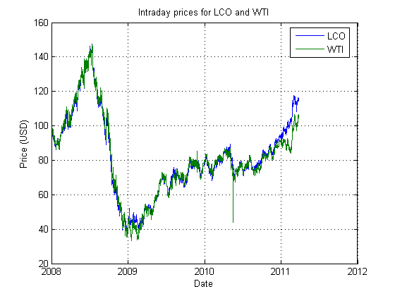
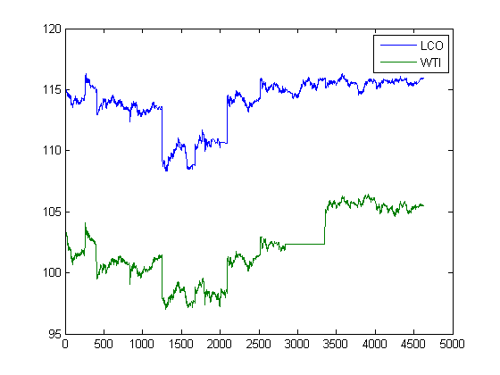
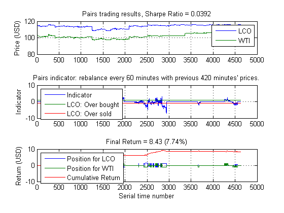
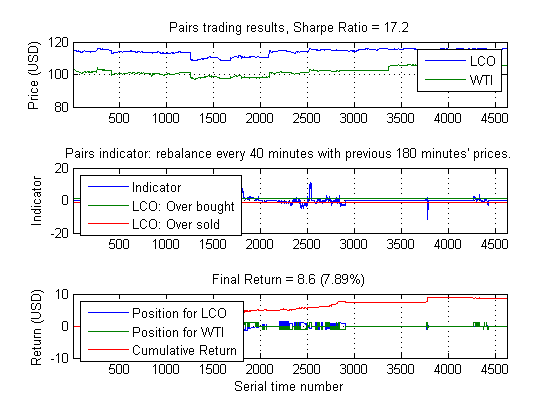

Intraday Pairs trading
This demo shows how functionality within Econometric Toolbox can be used to identify and calibrate a simple, intraday pairs trading strategy.
Copyright 2010-2011, The MathWorks, Inc. All rights reserved.
Contents
Load intraday data from a database
We will download intraday data for Brent Crude (LCO) from our database. We will also download data corresponding to West Texas Intermediate (WTI).
LCO = getMinuteDataFromDB('LCO'); WTI = getMinuteDataFromDB('WTI'); pairsChart(LCO, WTI) % These two time series have historically tracked each other, but since % December 2010, LCO has consistently traded higher than WTI. It would % seem that a pairs trading strategy would not work in 2011, but if we are % willing to actively recalibrate our model on an intraday basis, we may % find profitable opportunities.
Let's focus on the last 11 days' of data:
series = [LCO(end-4620+1 : end, 4) WTI(end-4620+1 : end, 4)]; plot(series) legend('LCO','WTI')
The cointegration test framework
Econometrics Toolbox supports both the Engle-Granger and the Johansen cointegration frameworks. Engle-Granger is the older model, and Johansen is particularly useful for analyzing more than two time series at a time. We will use Engle-Granger for our trading model.
% First, we note that the last 11 days are not cointegrated as a whole egcitest(series) % (A zero indicates failure to reject the null hypothesis that no % cointegrating relationship exists.)
ans =
0
Even so, there are smaller windows of time where a cointegrating relationship does exist.
[h, ~, ~, ~, reg1] = egcitest(series(1700:2000, :)); display(h)
h =
1
The test estimates the coefficients of the cointegrating regression as well as the residuals and the standard errors of the residuals: all useful information for any pairs trading strategy.
display(reg1)
reg1 =
num: 301
size: 301
names: {2x1 cell}
coeff: [2x1 double]
se: [2x1 double]
Cov: [2x2 double]
tStats: [1x1 struct]
FStat: [1x1 struct]
yMu: 110.7448
ySigma: 0.3043
yHat: [301x1 double]
res: [301x1 double]
DWStat: 0.1891
SSR: 13.0123
SSE: 14.7666
SST: 27.7789
MSE: 0.0494
RMSE: 0.2222
RSq: 0.4684
aRSq: 0.4666
LL: 26.6152
AIC: -49.2304
BIC: -41.8162
HQC: -46.2636
The pairs trading strategy
The following function describes our pairs strategy.
edit pairs
We may test this strategy as we do our other rules:
pairs(series, 420, 60) % Note that this strategy will not trade if the most recent minutes do not % show signs of cointegration and that the size of the long/short positions % are dynamically scaled with the volatility of the cointegrating % relationship. Many other customizations can be made.
We can use our existing parameter sweep framework to identify the best combination of calibration window and rebalancing frequency.
if matlabpool('size') == 0 matlabpool local end window = 120:60:420; freq = 10:10:60; range = {window, freq}; annualScaling = sqrt(250*7*60); cost = 0.01; pfun = @(x) pairsFun(x, series, annualScaling, cost); tic [~,param] = parameterSweep(pfun,range); toc pairs(series, param(1), param(2), 1, annualScaling, cost)
Starting matlabpool using the 'local' configuration ... connected to 8 labs. Elapsed time is 32.812738 seconds.
Despite the fact that these historically-tracking time series have diverged, we can still create a profitable pairs trading strategy by frequently recalibrating.